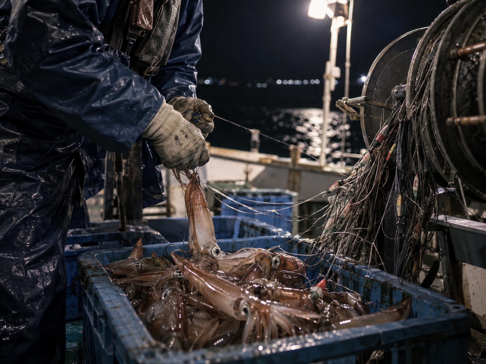
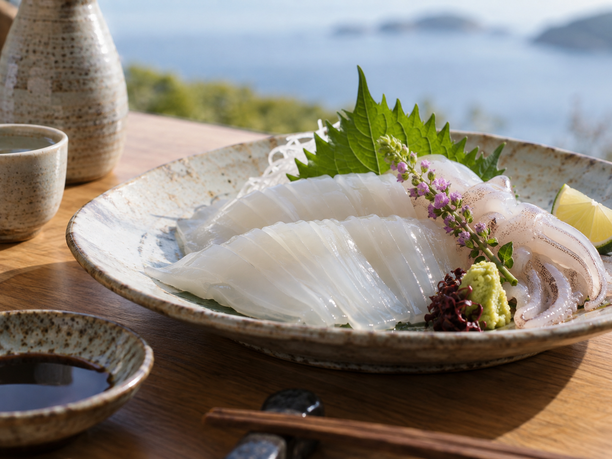

夜の日本海を彩る漁火と、
極上の上品な甘み。
夜の海に浮かぶ「漁火（いさりび）」
漆黒の日本海の水平線に、何十隻もの一本釣り漁船が点灯する「集魚灯」が等間隔に並びます。この「漁火」は、まるで海の上に光の道ができたかのように幻想的で、夏の鳥取の夜を象徴する風物詩として多くの人々を魅了しています。

山陰の夏の主役、白いか
一般的には「ケンサキイカ」と呼ばれるこのイカは、山陰地方（特に鳥取県周辺）では親しみを込めて「白いか」と呼ばれています。初夏から秋にかけて旬を迎え、透き通るような美しい身を持っています。

その最大の特徴は、柔らかく、濃厚で、上品な甘みを持つことです。刺身はもちろん、天ぷらや煮付け、地元ならではの一夜干しなど、様々な味わい方で食卓を彩ります。

食と風景が繋ぐ、山陰への想い
この極上の味と風景は、地元の人々だけのものに留まりません。「本場の白いかを食べたい」「あの漁火の風景を見たい」と、毎年夏になると遠方から多くの観光客が鳥取を訪れます。
近年では白いかを食べるだけでなく、夜の白いか釣りそのものを体験する観光も行われています。食と風景をきっかけに、山陰との新しい関係が始まります。SAN-IN HIDDEN JAPANは、ただ食品を箱に詰めるのではなく、このような「風景」や「土地の空気感」ごと、あなたにお届けしたいと考えています。